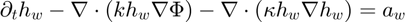
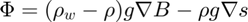
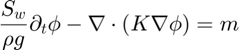
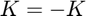
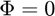
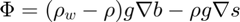
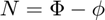

Contents
function [UserVar,phi1,Phi1,N1,RR,KK]=hwEquation(UserVar,CtrlVar,MUA,F0,F1,k)
Water film thicknes equation

where


Solve for phi
Here the equation to solve is

I set


Solve for  and then set
and then set

and

Phi1=F1.g.* ( (F1.rhow-F1.rho).*F1.b + F1.rho.*F1.s) ; % does not change, if s and b do not switch CtrlVar.GWE.Variable case "-phi-" phi0=F0.phi ; phi1=F1.phi; PhiZero=Phi1*0 ; % Phi set to zero becasue I'm solving for phi dphi=zeros(MUA.Nnodes,1) ; dlambda=[]; lambda=0; K=-K ; % Need to change the sign of this term BCs=BoundaryConditions ; [UserVar,BCs]=GetBoundaryConditions(UserVar,CtrlVar,MUA,BCs,F1) ; MLC=BCs2MLC(CtrlVar,MUA,BCs); LL=MLC.hL ; cc=MLC.hRhs ; if ~isempty(LL) BCsRes=LL*phi1-cc ; if norm(BCsRes) >1e-6 phi1=LL\cc; % make feasable end end aw0=F0.aw; aw1=F1.aw; for JNL=1:2 % since the system is linear, only one iteration is required [UserVar,RR,KK]=GroundWaterEquationAssembly(UserVar,CtrlVar,MUA,phi0,phi1,aw0,aw1,K,Sw,PhiZero) ; if ~isempty(LL) hh=cc-LL*phi1; else hh=[]; end [dphi,dlambda]=solveKApeSymmetric(KK,LL,RR,hh,dphi,dlambda,CtrlVar) ; phi1=phi1+dphi ; lambda=lambda+dlambda ; fprintf("nit=%i \t norm(dphi)=%g \t norm(hh)=%g \n",JNL,norm(dphi),norm(hh)) end N1=Phi1-phi1 ; case "-N-"
Solve for N
N0=F0.N;
N1=F1.N;
dN=zeros(MUA.Nnodes,1) ;
dlambda=[]; lambda=0;
BCs=BoundaryConditions ;
[UserVar,BCs]=GetBoundaryConditions(UserVar,CtrlVar,MUA,BCs,F1) ;
MLC=BCs2MLC(CtrlVar,MUA,BCs);
LL=MLC.hL ; cc=MLC.hRhs ;
if ~isempty(LL)
BCsRes=LL*N1-cc ;
if norm(BCsRes) >1e-6
N1=LL\cc; % make feasable
end
end
Phi1=F1.g.* ( (F1.rhow-F1.rho).*F1.b + F1.rho.*F1.s) ;
aw0=F0.aw*0;
aw1=F1.aw*0;
for JNL=1:2 % since the system is linear, only one iteration is required
[UserVar,RR,KK]=GroundWaterEquationAssembly(UserVar,CtrlVar,MUA,N0,N1,aw0,aw1,K,Sw,Phi1) ;
if ~isempty(LL)
hh=cc-LL*N1;
else
hh=[];
end
[dN,dlambda]=solveKApeSymmetric(KK,LL,RR,hh,dN,dlambda,CtrlVar) ;
N1=N1+dN ;
lambda=lambda+dlambda ;
fprintf("nit=%i \t norm(dN)=%g \t norm(hh)=%g \n",JNL,norm(dN),norm(hh))
end
phi1=Phi1-N1 ;
otherwise error("case not found") end